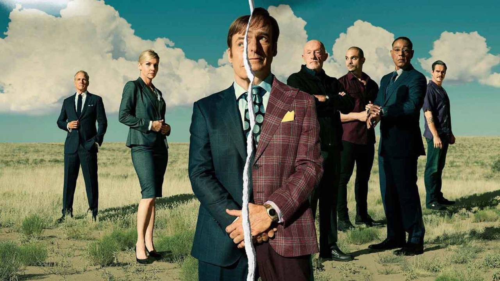

Mustafa F. KABİL
İlgi Alanlarım
Diziler
- Gibi
- Ayak İşleri
- Breaking Bad
- Better Call Saul
Kitaplar
- İnsanca Pek İnsanca
- Varlık ve Hiçlik
- Gülün Adı
- Harry Potter serisi
Hakkımda
Merhaba. Ben Mustafa Kabil. İstanbulda yaşıyorum. Pragmatistim. Bana güç kazandırmayan şeylerle ilgilenmem. /h4>
Sevdiğim Diziler
Better Call Saul
Better Call Saul bir devam dizisidir. Breaking Bad dizisinde sevilen avukat karakter jimmynin nasıl kendi olduğu hikayesini anlatır. İyi ve kötü kararlarıyla nereye vardığını, insanın kendi olma sorumluluğunu gerçekleştirdiğinde yüzleşebileceği sorunlarla veya alabileceği ödüllerle ilgili insanı düşündürür.

BETTER CALL SAUL RESMİ